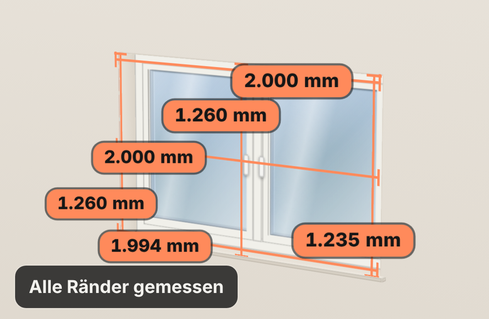

Messen mit dem Zollstock
Das kleinste
Maß zählt.
3 Breiten, 3 Höhen, dazu Breite und Höhe des alten Fensters. Ist die Öffnung außer Winkel, markiert die App das.
- 8 Maße je Fenster
- cm statt mm wird erkannt

Messen mit dem Zollstock
3 Breiten, 3 Höhen, dazu Breite und Höhe des alten Fensters. Ist die Öffnung außer Winkel, markiert die App das.
